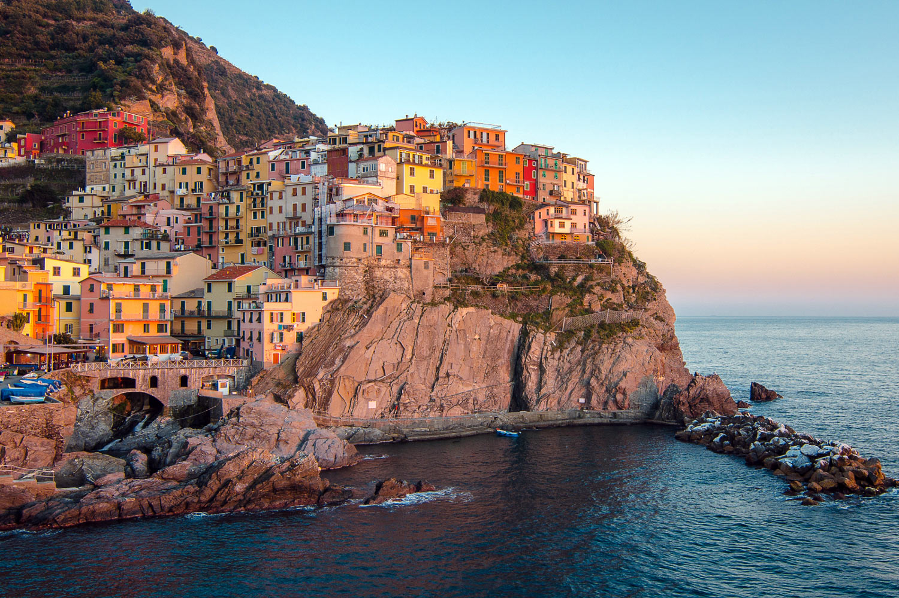

Nyitólap
mondat1
mondat2
mondat3


mondat4
felirat
Toszkána Észak-Olaszország közigazgatási régiója; nyugaton a Tirrén-tenger irányában helyezkedik el. Északnyugat felé Liguria, északon Emilia-Romagna, keleten Marche és Umbria, délen Lazio határolja. Közigazgatási székhelye: Firenze. Toszkána régiójához több sziget is tartozik, ezek nagyrészt Livorno megye, kisebb részben Grosseto megye részét képezik.
mondat1
mondat2
mondat3
mondat4
felirat